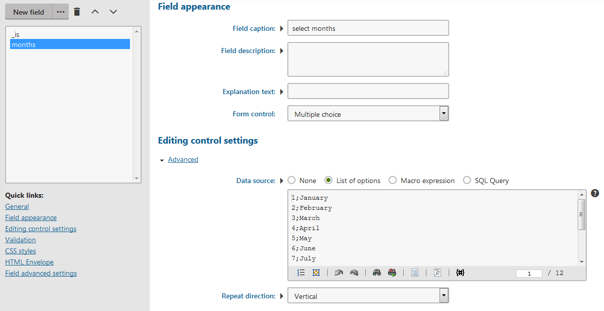

Creating macro examples
Macro rules allow non-technical users to create macro conditions without any knowledge of K# macro syntax. The rules are internally implemented as predefined macro expressions but appear as purely text-based clauses describing certain requirements. Users build conditions out of macro rules inside a dedicated Rule designer interface.
The system contains many different types of rules by default and allows you to create custom rules to fulfill any requirements of your users. There are several categories of macro rules:
|
Rule category |
Description |
Managed in |
|
Global |
Global rules are available when creating conditions in any part of the system. Note: Certain types of conditions that are closely related to individual applications do not offer global rules. |
Macro rules -> Global |
|
Form validation |
Allow the system to validate input values of form fields. Users can select the validation rules when defining fields in the field editor (general fields) and the form builder. |
Macro rules -> Form validation |
|
Workflow |
Users can select workflow rules when adding conditions to workflow scopes or advanced workflow steps. |
Workflows -> Macro rules |
|
On-line marketing |
Users can select on-line marketing rules when building conditions for:
|
Contact management -> Configuration -> Macro rules |
|
Reporting |
Users can select reporting rules when specifying conditions for Report subscriptions. |
Open the Reporting application, select any report category in the tree and open the Macro rules tab (in the collapsible panel). |
|
E-commerce |
The system provides rules for creating conditions that limit discounts: |
Store configuration or Multistore configuration -> Discount rules |
Defining macro rules
To prepare new macro rules for your users:
Navigate to the management interface for the appropriate type of rule (see the table above).
Click New macro rule.
Fill in the following properties:
General
Display name
Sets the name displayed to users in the list of macro rules in the rule designer.Also serves as a basic description of the rule's purpose.
Name
Serves as a unique identifier of the rule (for example in the API).
Description
A text description of the rule's purpose and parameters. The text appears as a tooltip when users hover over the rule in the rule designer.
Enabled
If disabled, users cannot select the rule when building conditions.
Note: Disabling a rule does not affect the functionality of existing conditions where users have added the given rule.
Rule data
User text
Defines the text displayed in the rule designer when users insert the rule into a condition.
To add parameters into the text, enter the Column name of a specific parameter enclosed in curly brackets, for example {days}. In the rule designer, the parameter appears as an underlined section in the text. Users can set the parameter's value by clicking the underlined text.
See the Adding rule parameters section for more information.
Condition
The actual condition represented by the rule. Define the condition through standard macro code (K#). The field provides autocomplete support.
Add any parameters offered by the rule to the appropriate position in the code, using the same syntax as for the User text field, for example {days}. When the system resolves the condition, the parameter expression is replaced by the value set for the parameter by users in the rule designer.
Required data
Limits for which conditions the macro rule is available. The rule only appears when building conditions that have the specified data items available in the resolving context. You can add multiple required data items separated by semicolons (;).
Leave this property empty unless you are creating rules specifically for conditions with a customized resolving context.
Requires context
Enable this property if the rule's condition needs to access context data (information about the current user, the currently viewed page, etc.) in order to work correctly. This ensures that the rule only appears for conditions that have the context available when they are resolved.
For example, the context is accessible when evaluating the conditions of Content personalization variants on the website's page, but not when the system is building dynamic Contact groups.
Click Save.
Adding rule parameters
Parameters are variables inside macro rules that modify the resulting condition. By adding parameters, you can make flexible rules that are usable for a wide range of scenarios. For example, in a macro rule that requires the current user to be a member of certain roles, the names of the roles would be a parameter.
To create a parameter for a macro rule:
Edit the macro rule.
Open the Parameters tab.
Prepare the parameter as a form field. Every parameter has a certain data type and various other settings. The interface that users see when editing the parameter's values depends on the selected Form control.
Refer to Reference - Field editor for details about working with the field editor.
Click Save.
Switch to the rule's General tab.
Place the parameter into the rule's User text and Condition code.
The syntax for inserting parameters is the parameter's Column name enclosed in curly brackets, for example {role}.
When the system resolves conditions containing the macro rule, the parameter expressions in the condition code are replaced by the values entered by users. You need to position the parameter expression accordingly.
Click Save.
Users can now set the values of the rule's parameters when building conditions.
Automatic rule parameters
There are several predefined parameters you can use to add common functionality to macro rules:
{_is}, {_has}, {_was}, {_will}, {_perfectum} - provide an easy way to negate a rule's condition. Each variant offers different wording, so you can use the one that matches the text of your rule. The parameters allow users to choose between a positive and negative option, for example, is or is not. If the negative option is selected, the parameter resolves into the K# negation operator "!" in the condition code. With the positive option, the parameter returns an empty string.
{_any} - useful for rules where a list of items needs to be specified through another parameter. The parameter allows users to switch between two options that determine how the rule processes the item list — any (at least one of the items must meet the given condition) or all (the condition must be fulfilled for all items in the list). When resolved, the parameter returns either a false (any) or true (all) value. In the condition code, you can insert the parameter as an additional argument of macro methods that work with object lists, which automatically ensures the required functionality. For example: CurrentUser.IsInRole("{roles}", {_any})
When you enter one of the automatic parameters into the User text field of a rule, the system automatically creates a field with the corresponding configuration and default values on the Parameters tab.
Escaping special characters in text parameters
Certain characters inside the values of text parameters could cause the macro condition of rules to become invalid if unhandled. For example, if a rule's condition is CurrentUser.UserNickName == "{name}", a quote character inside the value of the name parameter would prematurely close the string, leading to invalid macro syntax and an incorrect parameter value.
To avoid the problem, the system automatically escapes quote and backslash characters inside parameters entered as string literals (directly enclosed inside quotes).
For more complex parameters, you can explicitly enable escaping of string special characters by adding |(escapestring) to the parameter, for example:
"Prefix {parameter|(escapestring)}"
Modifying existing macro rules
When you make changes in the definition of a macro rule or its parameters, the system does NOT update the functionality of existing conditions. This may lead to incorrect behavior of conditions containing the modified rule.
To make sure your conditions are up-to-date, you need to manually perform the following steps after modifying an existing macro rule:
Find the condition fields that contain the rule. You can use the macro report tool to search.
Click Edit next to the field to open the rule designer.
If required, update the parameters for all occurrences of the modified rule.
Click Save & Close.
When you save the condition, the system uses the current definitions of the contained macro rules.
Example – Creating a macro rule
Let us look at a step-by-step process of creating a macro rule a bit closer.
If you want to, for example, limit visibility of a particular feedback form field to only a select time period (you may want to have an additional text field in a feedback form asking or a user's opinion about a campaign running only from June to August), you can achieve such through the custom macro rule functionality.
To create a custom macro that fulfills this condition:
Open the Macro rules application.
Click New macro rule under the Global tab.
Fill in the following properties:
Display name: name identifying your macro in the macro rule editor
User text: Current month {_is} one of the following months: {months}.
Condition: {_is}CurrentDateTime.Month.EqualsAny("{months}".Split("|"))
Click Save.
Switch to the Parameters tab. You can see that Kentico automatically creates the months field from the {months} parameter entered into User text and Condition field in step 3.
Select the months field from the field selector.
Fill in the following properties:
Field caption: select months the campaign will be active
Form control: Multiple choice
Data source: List of options
Into the Data source text box copy the following:
1;January2;February3;March4;April5;May6;June7;July8;August9;September10;October11;November12;DecemberClick Save at the top of the page to save your changes.
Your custom macro rule is now finished, available globally across all your sites, and ready to be inserted into the Visibility and Enabled conditions of form fields through the Rule designer dialogue.
Now let us a look at showing a form field for only a select time span (for example June to August). For this demonstration, we will be using the Send us a message form on our default Dancing Goat website:
Open the Forms application.
Edit the Send us a message form.
Switch to the Fields tab.
From the fields selector, select the UserMessage field.
Click the Edit button next to the Visibility condition field. This will open the Edit macro condition dialogue.
Select your macro from the list and insert it by clicking on the < button.
Click on select months the campaign will be active. A Set parameter value dialogue window will open.
Select June, July, and August text boxes and click on the Set parameter button.
Click Save & Close.
Click Save.
Now whenever a user visits a page with the Send us a message form outside of the specified three-month interval, the UserMessage form field will be hidden.
Example – Creating a macro rule
The following is a step-by-step example that demonstrates how to create a custom macro rule. The sample macro rule allows users to create conditions that are fulfilled only during selected months.
Open the Macro rules application.
Click New macro rule under the Global tab.
Fill in the following properties:
Display name: Current month is
User text: Current month {_is} one of the following months: {months}.
Condition: {_is}CurrentDateTime.Month.EqualsAny("{months}".Split("|"))
Click Save.
Switch to the Parameters tab. Kentico automatically creates the months field from the {months} parameter entered into User text and Condition field.
Select the months field.
Fill in the following properties:
Field caption: select months
Form control: Multiple choice
Data source: List of options
Copy the following into the Data source text area:
1;January2;February3;March4;April5;May6;June7;July8;August9;September10;October11;November12;DecemberClick Save at the top of the page.

Your custom macro rule is now finished, available globally across all your sites, and ready to be inserted into conditions through the Rule designer dialog.
For example, you can use the rule to limit the visibility of a feedback form field asking for a user's opinion about a campaign running only from June to August. The following example uses the Send us a message form on the Dancing goat sample website:
Open the Forms application.
Edit the Send us a message form.
Switch to the Fields tab.
Select the UserMessage field.
Click Edit next to the Visibility condition setting under the Field advanced settings section. This opens the Edit macro condition dialog.
Select your macro from the list and insert it by clicking Add rule (
 ).
).Click select months. A Set parameter value dialog window opens.
Select the June, July, and August options and click Set parameter.
Click Save & Close.
Click Save.
Now whenever a user visits a page with the Send us a message form outside of the specified three-month interval, the UserMessage form field will be hidden.